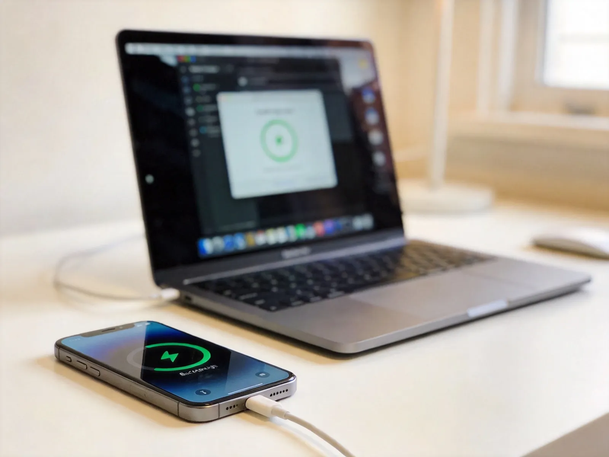
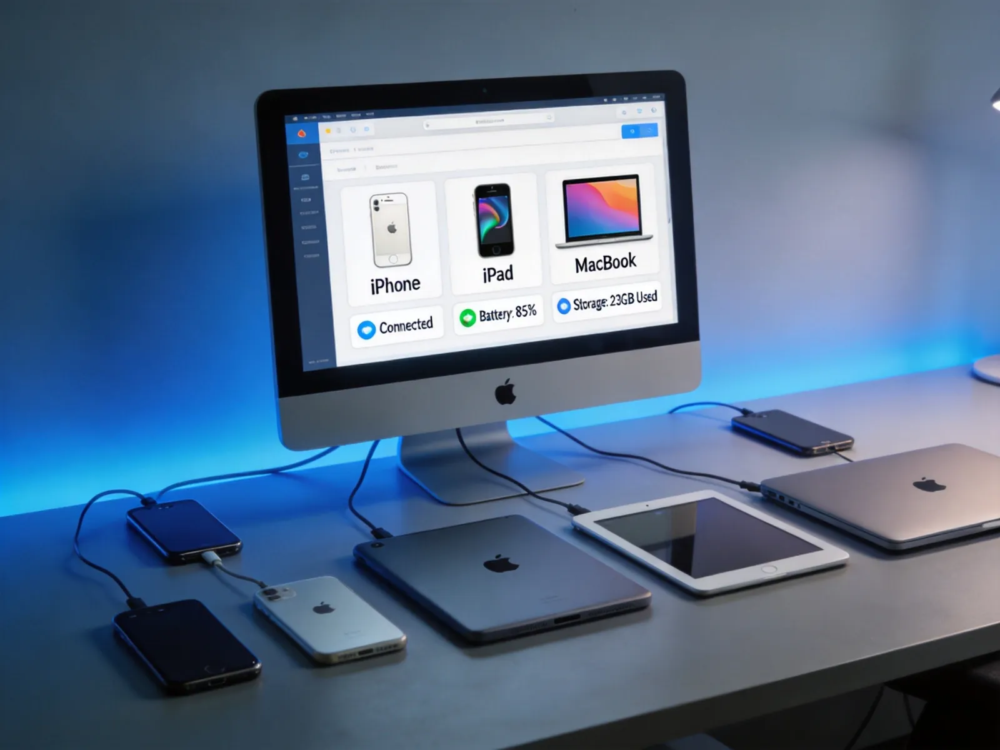

一键智能刷机
智能识别设备型号，自动匹配最新固件。支持保留资料刷机、常规快速刷机、修复刷机三种模式，小白也能轻松操作，全程约10-15分钟完成。
一站式解决iPhone/iPad/iPod管理需求。一键刷机、数据备份恢复、应用管理、虚拟定位、投屏远控——告别iTunes的繁琐，让苹果设备管理像拖拽文件一样简单。
累计用户下载
支持设备型号
安全运营经验
应用资源库
覆盖苹果设备管理全场景，每一项功能都经过数千次测试
智能识别设备型号，自动匹配最新固件。支持保留资料刷机、常规快速刷机、修复刷机三种模式，小白也能轻松操作，全程约10-15分钟完成。
银行级加密传输，智能增量备份技术，速度提升300%。支持选择性备份照片、通讯录、微信记录等单项数据，断点续传无忧，换机数据完美迁移。
海量正版IPA资源库，无需Apple ID即可安装应用。支持应用卸载、备份、更新修复、应用多开，电脑端更新应用无需消耗手机流量。
随意修改iPhone GPS位置，支持地图搜索、经纬度输入、鼠标点击三种方式。精确定位到街道级别，无需越狱，一键恢复真实定位。
超清画质投屏到电脑或电视，流畅稳定低延迟。支持iOS和Android设备，会议演示、教学培训、游戏直播都能轻松搞定。
智能验机检测设备真伪，查看电池健康度、激活状态、保修期限。识别翻新机、改装机，全面掌握设备硬件信息，购买二手设备前必备。
无论你是普通用户、极客玩家还是维修人员，爱思助手全能版都能胜任

智能增量备份技术，速度比iTunes快3倍。选择性备份照片、联系人、微信记录等数据，断点续传支持，让珍贵记忆万无一失。

同时管理多台iPhone、iPad、iPod，设备信息一目了然。应用、照片、音乐、铃声、通讯录等资料高效管理，批量操作省时省力。
新旧iPhone无缝迁移，通讯录、照片、微信聊天记录一个不落。支持细项选择，按需勾选数据类型，传输完成自动校验确保无遗漏。
快速解答你关于爱思助手全能版的疑问
2亿+用户的共同选择，让苹果设备管理变得简单高效
⬇ 免费下载 Windows版